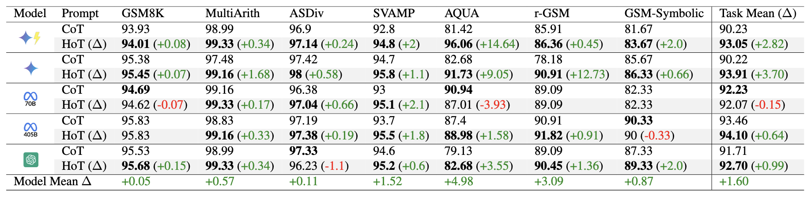
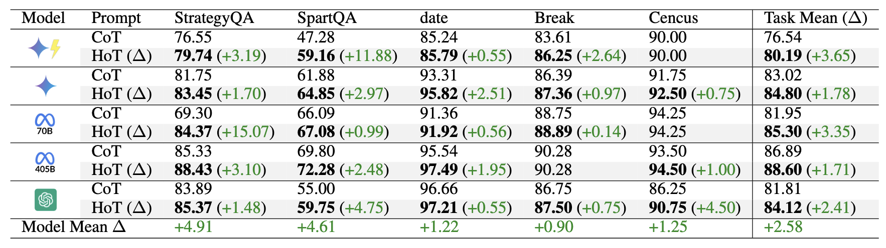
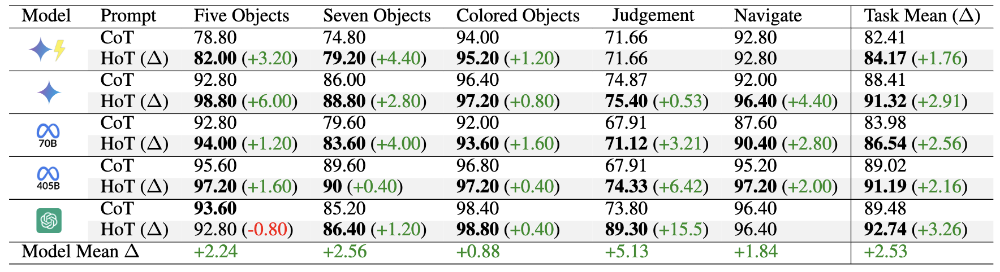

Introduction
Modern LLMs can bold, italicize or underline their text. Why not highlight as well? We propose Highlighted Chain-of-Thought Prompting (HoT), a technique for prompting LLMs to generate highlights around their responses that links specific information from the user query to the LLM response. This method improves user experiences and improves answer accuracy when compared to CoT.
Benchmark Improvements
We evaluate HoT on 17 tasks across arithmetic, question-answering, and logical reasoning datasets using Gemini-1.5-Pro (), Gemini-1.5-Flash (), Llama-3.1-70B (), Llama-3.1-405B () and GPT-4o ().

HoT consistently improves accuracy over CoT across arithmetic tasks. Notably, HoT achieves the largest performance gains in AQUA (+14.64 for Gemini-1.5-Flash) and r-GSM ((+12.73 for Gemini-1.5-Pro).

HoT demonstrates consistent accuracy improvements over CoT across QA tasks (StrategyQA, SpartQA, Date) and Reading Comprehension tasks (DROP (Break) and DROP (Cencus)). The largest gains are observed in StrategyQA (15.07 for Llama-3.1-70B) and SpartQA (11.88 for Gemini-1.5-Flash).

\hot outperforms CoT across logical reasoning BBH subsets, with notable gains in Judgment ( \increasenoparent{15.5} for \gptlogo) and Five Object tasks (\increasenoparent{6.00} for \geminilogo).
Adding XML Tags to LLM Responses Boosts Performance
We found that adding XML tags to LLM responses significantly boosts performance across a wide range of tasks. In particular, we observed that the highlights generated by HoT closely mirror human annotations
What's the Point?
LLMs are great at giving you intelligent responses to any question you have. However, it can be annoying to read through huge blocks of text. Humans frequently add color highlighting to our writing to make it easier to read, so why not allow LLMs to do the same thing?
Consider this example. Which of these two responses are easier to read? For the response on the left, you have to parse through all the irrelevant context to find the part of the conversation that you care about. For the HoT response, you can almost instantly scan over the LLM responses to see exactly where it drew its answer from.
How do you make these highlights?
Given an input question, LLMs first repeat the original question but with XML tags wrapped around the key facts needed to answer the question. Then, the model generates answers using the information in the question. The model is able to understand what types of information to tag using fewshot examples given in the HoT instruction prompt.
Take this question for example. First, the model reads over the original question. Then it repeats the question with XML tags wrapped around the most important facts. Since the model wrapped "2 books" with the fact1 tag in the reformatted question, it knows to wrap any references to "2 books" in the answer with the same fact1 tag.
Then using regex and CSS, we can easily strip out these XML tags and assign a highlight color to each unique tag.
How does this affect the user experience?
We conduct a study with 63 people to evaluate the effectiveness of HoT in helping users verify the correctness of LLM answers. Users are randomly assigned to see exclusively HoT or CoT LLM response and then have to predict if the given answer is correct or incorrect. We found that HoT helps time-limited human participants to more accurately and efficiently recognize when LLMs are correct. However, when LLMs are wrong, HoTs tend to fool users into believing that an answer is correct.
| Prompt |
Avg Time
(seconds) |
Accuracy (%)
LLM is Correct ✓ |
Accuracy (%)
LLM is Incorrect ✗ |
| HoT |
47.26 |
84.48 ± 20.28 |
54.83 ± 30.13 |
| CoT |
62.38 |
78.82 ± 28.26 |
72.21 ± 21.99 |
Discussion
Why does HoT work?
Part of the increase of accuracy in HoT can likely be attributed to repeating the question. Several papers (Xu et al., 2024 and Mekala et al., 2024) have shown that having the LLM repeat the input question before generating a response can improve performance. However, in our full paper we show that HoT has a higher performance than just repeating the question.
We theorize that by generating extra tokens (in this case XML tags) around key facts helps the LLM to focus its attention to the most important context. Its also possible that by adding the XML tags, the LLM is more effectively able to recall specific information from earlier in its context window with less frequent hallucinations. However, more research is needed to verify these claims.
What about Reasoning Models?
So if HoT can help LLMs to more effectively reason, how do reasoning models respond to this prompting strategy? Given the relatively high cost to run Deepseek R1 and the low rate limits of Gemini-2.0-Flash-Thinking, we were only able to run evaluations on a subset of benchmarks. However, we see no benefit to using HoT with these reasoning models.
Given that HoT relies on fewshot examples, the negative results for Deepseek align with the warnings from the creators of R1 explicitly claim that fewshot examples can actually R1's performance. Interestingly, the thinking tokens for R1, do NOT contain XML tags, but its final answer does include XML tags. Gemini Flash 2.0 Thinking does not provide thinking tokens over the API, so we are not able to analyze its internal Chain of Thought.
If trained to use XML tags in its thinking tokens, HoT could potentially be a useful tool for reasoning models to ground facts over long contexts. However, the current reasoning models do not benefit from HoT.
Limitations
The biggest limitation for HoT is its reliance on few shot examples. On our Github, we have gathered plenty of fewshot examles that can be applied to most domains. However if you have a niche task that you want to apply HoT on, you have to first construct the fewshot examples yourself. However, this could be easily fixed in future work with a finetuned model that produces HoT responses by default.
Conclusion
We present Highlighted Chain of Thought, a novel prompting approach that enables LLMs to directly reference text from the input question in their responses. Our experiments show that on average, HoT improves arithmetic, question answering, and logical reasoning tasks by +1.6, +2.58, and +2.53 percentage points over CoT while also enabling users to verify correct LLM answers 24% faster than CoT LLM answers.